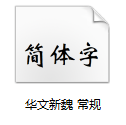
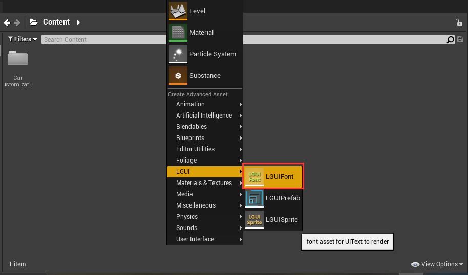
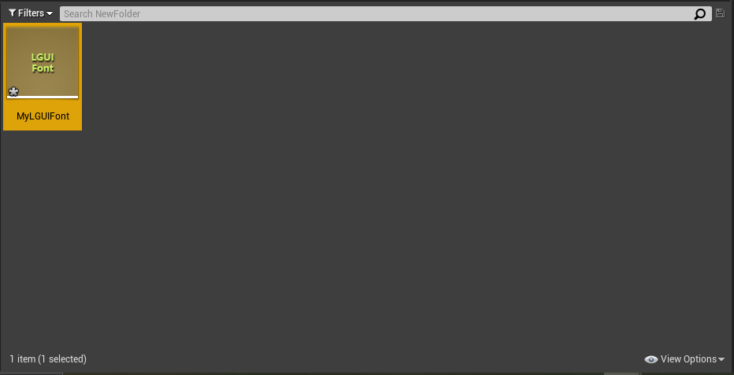
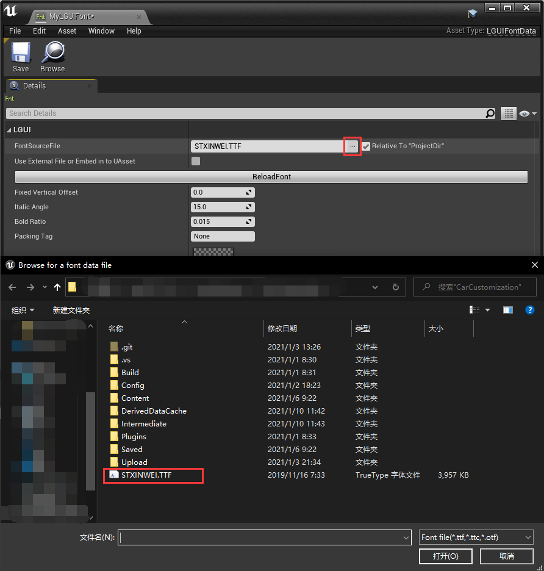
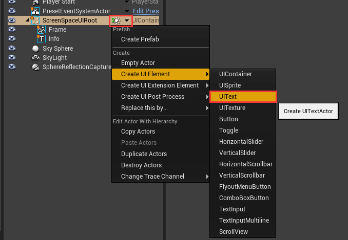
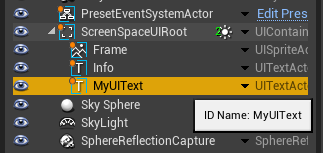
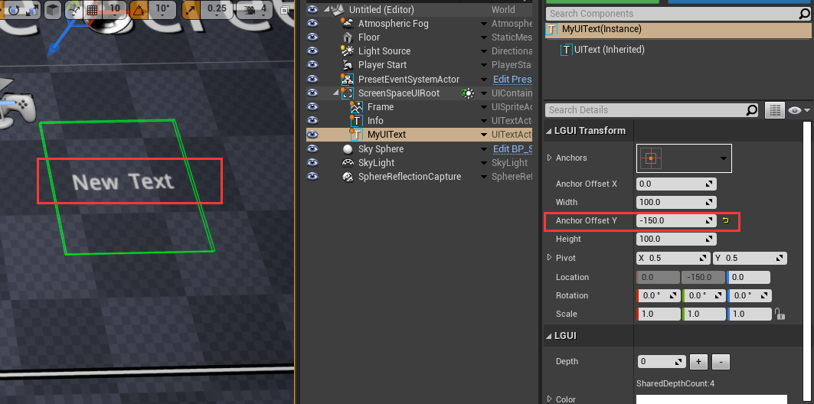
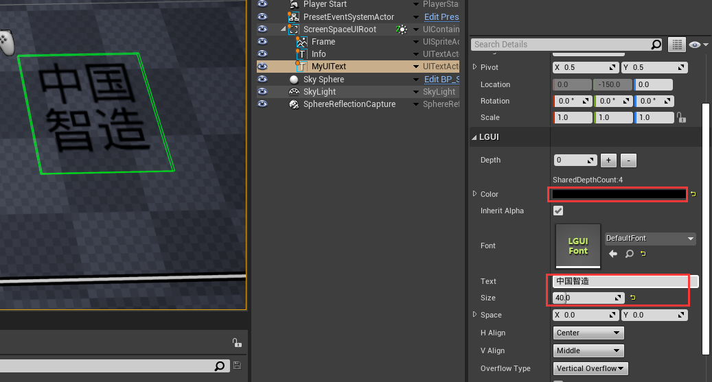
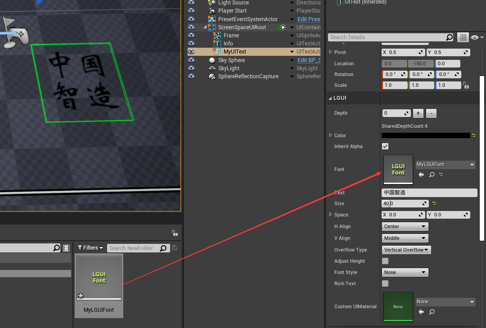

Use custom font
In this section, we will use a custom font file(ttf, ttc, otf) to create our UIText.
1. Prepare a font file.
LGUI use freetype to render fonts, so we will use freetype supported format(ttf, ttc, otf). Download a font file or grab one from system fonts directory. I use "华文新魏" from C:/Windows/Fonts: 
Copy the font file to your UE4 project directory (same directory of the .uproject file).
2. Create LGUI Font asset.
Right click on the empty area of your content folder, choose "LGUI"->"LGUIFont", that will create LGUIFont asset: 
Rename the asset to MyLGUIFont: 
Double click it to open font editor window, click the "..." after "FontSourceFile" property, and choose the font file you just prepared: 
3. Create UIText.
Follow the HelloWorld section to create a base screen space UI.
Select "ScreenSpaceUIRoot", and right click the down arrow, choose "Create UI Element"->"UIText": 
Rename the UIText you just created to "MyUIText": 
4. Change UIText property.
Select "MyUIText", change "Anchor Offset Y" to -150, so it will move down a little bit in viewport: 
Select "MyUIText", change "Size" to 40, "Color" to black, type in "中国智造" in the "Text": 
5. Use our own font.
The important part, select "MyUIText" and drag "MyLGUIFont" to the "Font" property, see the font change in viewport: 
See Prev HelloWorld | See Next Prefab | MainPage